In modern dentistry, dental implant is one of the best treatment modality for replacement of missing teeth. Basically dental implant is titanium screw which serve as replacement for the the root portion of the missing tooth. Dental implant is available in various sizes (height and weight)
Selection of dental implant varies according to clinical situations.
It can be use to replace one or more missing teeth. In edentulous patients implant retained dentures can be used. Dental implant retained denture provide fixed teeth to edentulous patients.
Advantages to Dental Implant
Dental implant is better than conventional bridge as they eliminate the modification of adjacent sound natural teeth & they do not place additional load on adjacent natural teeth.
Long time missing teeth lead to shrinkage of surrounding jaw bone. Denture implants help to maintain shape & structure of jaw bone by bone stimulation.
Implant retained dentures are more comfortable than conventional dentures because there is no slipping problem. As dental implant are fixed into the jaw bone they function like natural teeth. Implant retained denture eliminate key worries of denture wearer & thus improve self confidence.
Now a days various implant materials & techniques are available so anyone with missing teeth can go ahead for the implants. Also due to development in dental implant techniques one can go for immediate implant.
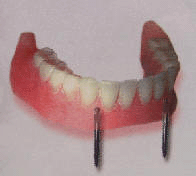 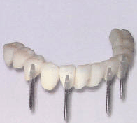Conventional Implants
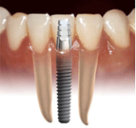With today's advancements in dental implant techniques, materials and technologies, almost anyone with missing teeth can now have Dental Implantologist treatments done. Conventional implants techniques have had good long-standing success rates.Also due to new developments in implant technologies and techniques, immediate implants and immediate loaded implants are now possible that can dramatically shorten treatment.
Conventional Dental Implants Procedure Procedure for placement of implants involve several steps requires period of 2 to 6 months.
Assessment of patient & treatment planning
In first visit case assessment is alone in which patient is examined for systemic diseases. When patient wishes to proceed with implant treatment detail assessment of patient is done. This involves X-rays, OPG, CT scans & taking of impressions.
Placement of Dental implant
Placement of Dental implant. It is simple procedure. This is performed under local anesthesia in sterile conditions in a dental clinic. If required bone contouring can be done using artificial bone.
Osseointegration (Healing Process)
Dental implant is left in jaw bone for integration for period of 2-3 months.
Suture removal is done after 7-10 days of surgery.
Temporary bridge or simple dentures can be worn during the healing phase
The Restorative Phase
After complete healing when tissues gum is ready; special abutment is attached to the implant.
If overdentures are opted, the metal bar/ball is placed and clip is used to securely retain the set of new over denture.
If crown or bridges are opted, abutment is placed which provides the support for new crown or bridge.
Maintenance
Patients are demonstrated brushing and flossing around implant.
Patient is recalled for check-up
Immediate Implants
Dental implants can now be placed after tooth extraction if bone condition and density are favourable.This technique is called as "Immediate Implant/Single day implants/Same day implant or One day implant."
Immediate implant placement in extraction socket
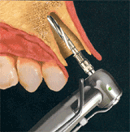 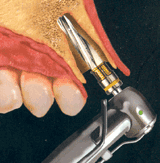 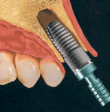 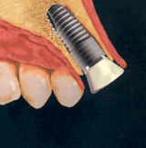What is Immediate Loaded Implants (Teeth in an Hour)
In some patients, temporary or permanent prosthesis can be placed immediately during the same treatment visit. This is called as immediately loaded implants.
This forms the basis of "TOOTH IN AN HOUR" concept which is widely being used by Dentist Pune.
The immediate loading of dental implant shortens the treatment time.
Orthodontics is the branch of dentistry that deals with straightening and correcting the tooth alignment and the dental specialist who does this is called an "Orthodontist".
Who Needs Orthodontic Treatment?
Today children as well as adults are choosing to have orthodontic treatment since age is no longer a factor that governs the feasibility of the treatment. But as you grow older the duration of the treatment is increased since it is easier to shift and align teeth during the growth phase of the jaws. Orthodontic treatment corrects
-malocclusion (bite or occlusion is off)
-tooth malalignment (crooked teeth)
Why Treat Malocclusion?
Orthodontics is not only used to improve your appearance. Malocclusion or malaligned teeth can have long term effects, such as:
interference with normal growth and development of the jaws
abnormal swallowing patterns
abnormal facial muscle function
impairment of chewing
speech defects
susceptibility to cavities due to the difficulty of removing plaque from crooked teeth vulnerability to accidents or fractured teeth (if your front teeth stick out, they may be more easily injured)
How Do Braces Work?
Teeth can slowly be moved and shifted into proper position by applying pressure in certain directions. Bands, wires and elastics are placed on the teeth to move them in the right direction. This takes place slowly and carefully over an extended period of time. Shifting teeth back into a functional position can take months to years, but eventually you'll have a new and improved mouth! Retainers are often used after the braces, to hold the teeth in their new position until they are stable. It is important to wear the braces or an appliance for however long it takes. If you quit at any point during treatment, the teeth can shift back into their old position..
Types Of Braces Available - Dentist Dental Braces
Metal Braces
Metal brackets are the ones that are most frequently used. They appear as small metal buttons that are glued to the front of each tooth. These tend to be less expensive than other types of brackets. Additionally, they can be made colorful with ligature rubber bands that come in a wide range of colors.
A major drawback of these braces is there color which makes its use very limited in cases of adult orthodontics.
Invisible Ceramic Braces
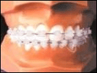Most people want better looking teeth but they also don’t want people to know that they have braces or deal with the unattractiveness of having those things in your mouth for so long. You can give the appearance that you don’t have braces simply by asking for invisible braces. They are a little more expensive but they’ll get the job done, and you won’t look like a 13 year old. The invisible class of braces includes Ceramic braces and sapphire braces.
Ceramic (Tooth Colored) Braces
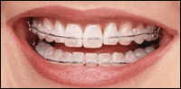Inspire brand brackets, are made of pure monocrystalline sapphire and are very translucent. They are very strong and do not stain. If your teeth are already very white, then Inspire braces will look best on you and seem to "disappear" on your teeth. If your teeth are less than white, they may tend to stand out (in this case, the Ceramic brackets would be a better choice). The pros and cons for Sapphire brackets are the same as those for Ceramic brackets.
Disadvantages of "Invisible Braces"
More expensive than metal braces
Not suitable for all cases.
Lingual Braces
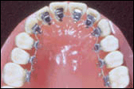These are the ultimate in brace concealing technology. They are placed on the backs of your teeth so nobody will even see that you have them on, unless they get an up close and personal look at the inside of your mouth.
Usually, lingual brackets are made of metal.
Orthodontists need special training to be able to treat patients with lingual braces. Therefore, not every orthodontist provides them.
A broken jaw is the 10th most common fractured bone in the human body. Fractures (breaks in the bone) are generally the result of a direct force or trauma to the jawbone (mandible). A dislocated jawbone means that the temporomandibular joint (where the jaw connects with the skull) is moved out of place.
Broken Jaw Causes
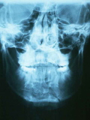
Although a jawbone fracture may occur from many pathological causes (for example, cancer, bone loss through infections), the large majority of fractures occur from the following:
Motor vehicle accidents
Assaults (facial trauma)
Sports-related injuries (boxing, football)
Falls (face-first falls)
The majority of mandibular (jawbone) fractures occur in young adult males (20-30 years of age), with most occurring in the body, condyle, and angle areas of the jawbone.
When to Seek Medical Care
If after some trauma to the jaw or face, a person's teeth don't fit together correctly, if they have bleeding within the mouth, significant pain, problems speaking, or swelling, they should seek medical care.
Broken jaw is best evaluated at a hospital. Therefore, most doctors will advise the person to go to an emergency department, preferably at a large hospital that would be more likely to have specialists (oral surgeons) on call to help evaluate and treat the individual if needed. A potential but serious consequence of jaw fractures is a problem breathing due to loss of support to the tongue. Therefore, any signs of breathing problems need to be addressed
Self-Care at Home for a Broken Jaw
If there is any question that an individual may have a broken jaw, they need to follow up with a doctor or a dentist specializing in oral surgery.
Ice should be applied to the jaw to help control the swelling on the way to be seen by the doctor. Sometimes patients will need a paper cup to catch the drool or to spit blood into on the trip to the doctor or emergency department. If other injuries are present, if bleeding is brisk or if swelling or other problems may compromise breathing, call 911 for emergent transport.
Broken Jaw Treatment and Surgery
Many people who have jaw pain will not have a jaw fracture and will be treated with pain medications and instructions to eat a soft diet and to follow up with their doctor.
Those people with fractures require further evaluation. Many fractures of the jawbone are associated with gum problems or tissue damage and should be considered open fractures. They will be treated with antibiotics and likely will require surgical intervention or wiring teeth together.
People may receive a tetanus shot.
Pain should be addressed and managed effectively by the doctor.
Many mandible fractures are stable, and the only treatment required is wiring the upper and lower teeth together. This will most commonly be performed by an oral and maxillofacial surgeon.
More unstable fractures often require surgery. Surgical methods using plates across the fracture site and screws to attach the plates (or thin perforated bars) to bone may allow some patients to have normal motion of the mandible and to eat shortly after surgery.
Oral cancer screening is an examination performed by a dentist or doctor to look for signs of cancer or precancerous conditions in your mouth. The goal of oral cancer screening is to identify mouth cancer early, when there is a greater chance for a cure.
Instruments Used For Oral, Head and Neck Cancer Examination
Clinicians need certain instruments and supplies in order to conduct a thorough and time efficient examination. Suggested tools for the oral, head and neck cancer exam include: an adequate light source, mirrors (laryngeal and nasopharyngeal), gloves, tongue blades, 2×2 gauze pads, anesthetic nasal spray, flexible nasopharyngolaryngoscope, otoscope, and nasal speculum.
The Oral Cavity
For this portion of the exam patient positioning can vary. Dental patients tend to lie on their backs, while their dentist exams their oral cavity. Physicians, on the other hand, usually have their patients sit up straight and face them eye-to-eye during the exam. It is imperative that the mouth be examined with an external light source, which allows both hands free for bimanual palpation or to hold gauze or tongue blade(s) for improved visualization. If a hands free light source is not available, an assistant may provide invaluable help in visualization of difficult areas such as the posterolateral border of the tongue and floor of mouth. Before beginning this part of the examination, ask the patient to remove all dental appliances.
When examining mucosal surfaces, it is important to gently dry those surfaces with a gauze or air syringe, so that color or texture changes will become more obvious. Multiple studies have consistently shown that the earliest manifestation of many oral and oropharyngeal squamous cell cancers is a persistent erythroplastic lesion (3). Clinicians must therefore be on the lookout for both red and white (leukoplakia) lesions on the oral mucosa, as well as detection through palpation of indurated and fixated masses with in the tissues.
Oral Cancer: Risk Factors and Prevention
The major causes of oral cancer worldwide remain tobacco in its many different forms, heavy consumption of alcohol, and, increasingly, infection with certain types of HPV. Although the relative contribution of risk factors varies from population to population, oral cancer is predominantly a disease of poor people. Prevention of this devastating disease can come from fundamental changes in socioeconomic status, as well as from actions to reduce the demand, production, marketing, and use of tobacco products and alcohol. A healthy diet, good oral and sexual hygiene, and awareness of the signs and symptoms of disease are important. Success depends on political will, intersectoral action, and culturally sensitive public health messages disseminated through educational campaigns and mass media initiatives.
Smokeless and Smoking Tobacco Use
Smokeless tobacco in the form of betel quid, oral snuff, and betel quid substitutes (locally called guktha, nass, naswar, khaini, mawa, mishri, and gudakhu) increases the risk of oral precancerous lesions and oral cancer between 2-fold and 15-fold. In most areas, betel quid consists of tobacco, areca nut, slaked lime, catechu, and several condiments, wrapped in a betel leaf. In recent years, small, attractive, and inexpensive sachets of betel quid substitutes containing a flavored and sweetened dry mixture of areca nut, catechu, and slaked lime with tobacco (gutkha) or without tobacco (pan masala), often claiming to be safer products, have become widely available and are increasingly used by young people, particularly in India. These products have been strongly implicated in oral submucous fibrosis (OSMF), which places individuals at high risk for malignancy.
More than 50 percent of oral cancers in India, Sudan, and the Republic of South Sudan, and about 4 percent of oral cancers in the United States, are attributable to smokeless tobacco products. Smokeless tobacco use among young people is increasing in South Asia, with the marketing of conveniently packaged products made from areca nut and tobacco; as a consequence, oral precancerous conditions in young adults have increased significantly.
Consistent evidence from many studies indicates that tobacco smoking in any form increases the risk of oral cancer by twofold to tenfold in men and women (IARC 2004a). Risk increases substantially with duration and frequency of tobacco use; risk among former smokers is consistently lower than among current smokers, and there is a trend of decreasing risk with increasing number of years since quitting. Use of smokeless tobacco and alcohol in combination with tobacco smoking greatly increases the risk of oral cancer. The biological plausibility is provided by the identification of several carcinogens in tobacco, the most abundant and strongest being tobacco-specific N-nitrosamines, such as N-nitrosonornicotine and 4-(methylnitrosamino)-1-(3-pyridyl)-1-butanone (IARC 2007). These are formed by N-nitrosation of nicotine, the major alkaloid responsible for addiction to tobacco.
The fact that more than 80 percent of oral cancers can be attributed to tobacco and/or alcohol consumption justifies regular oral examinations targeting tobacco and alcohol users, as well as prevention efforts focusing on tobacco and alcohol control (Radoi and others 2013). The World Health Organization Framework Convention on Tobacco Control, an evidence-based international treaty, aims to reduce the demand for tobacco globally by price, tax, and non-price measures. (See chapter 10 for a full discussion of tobacco control.
When you eat food, it breaks down in your stomach and passes through your intestines. This process is known as digestion. Then, the walls of your intestines absorb nutrients from the food. What remains as waste passes along to your colon and rectum.
At times, things may go wrong in this process and the waste becomes stuck in the colon. This is known as fecal impaction of the colon.
When you have an impacted colon, your feces become dry and won’t budge, making it impossible to excrete them from your body. Impacted feces block the way for new waste to leave the body, causing it to back up.
Symptoms
All symptoms of fecal impaction are serious and warrant prompt medical attention. They include:
leakage of liquid stool
abdominal discomfort
abdominal bloating
abdominal pain
feeling the need to push
nausea
vomiting
headache
unexplained weight loss
not wanting to eat
Severe symptoms include:
rapid heart rate
dehydration
hyperventilation, or rapid breathing
fever
confusion
becoming easily agitated
incontinence, or passing urine without trying
Treatment options
Laxatives
The first method of treatment for fecal impaction is usually an oral laxative. There are many over-the-counter laxatives that can help stimulate clearing of the colon. Sometimes, a medicated suppository, which is medication that’s placed into the rectum, may help.
Manual removal
If a laxative or a suppository doesn’t unblock the feces from your colon, your doctor will remove the feces manually. To do this, they’ll insert their gloved finger into your rectum and remove the blockage.
Enema
If your doctor can’t remove the entire blockage, they’ll use an enema to remove it. An enema is a small, fluid-filled bottle with a nozzle attached. The nozzle inserts into the rectum. Your doctor squeezes the bottle, releasing the liquid into the rectum and colon. This lubricates the colon and moistens the feces, making it easier to dislodge. You can find enemas at your local drugstore or on Amazon.
Water irrigation Water irrigation involves pushing a small hose up through the rectum and into the colon. The hose connects to a machine that emits water through the tube. After the irrigation, your doctor will massage your abdomen, moving the waste out your rectum through another tube.
Root canal treatment is a treatment sequence for the infected pulp of a tooth which results in the elimination of infection and the protection of the decontaminated tooth from future microbial invasion.Root canals, and their associated pulp chamber, are the physical hollows within a tooth that are naturally inhabited by nerve tissue, blood vessels and other cellular entities. Together, these items constitute the dental pulp. Endodontic therapy involves the removal of these structures, the subsequent shaping, cleaning, and decontamination of the hollows with small files and irrigating solutions, and the obturation (filling) of the decontaminated canals. Filling of the cleaned and decontaminated canals is done with an inert filling such as gutta-percha and typically a eugenol-based cement. Epoxy resin is employed to bind gutta-percha in some root canal procedures. Endodontics includes both primary and secondary endodontic treatments as well as periradicular surgery which is generally used for teeth that still have potential for salvage.
Treatment procedure
The procedure is often complicated, depending on circumstances, and may involve multiple visits over a period of weeks.
x-ray of a root canal operation
The upper left second premolar, after excavation of DO decay. There was a carious exposure into the pulp chamber (red oval), and the photo was taken after endodontic access was initiated and the roof of the chamber was removed.
Before endodontic therapy is carried out, a correct diagnosis of the dental pulp and the surrounding periapical tissues is required. This allows the endodontist to choose the most appropriate treatment option, allowing preservation and longevity of the tooth and surrounding tissues. Treatment options for an irreversibly inflamed pulp include either extraction of the tooth or removal of the pulp.
Removing the infected/inflamed pulpal tissue enables the endodontist to help preserve the longevity and function of the tooth. The treatment option chosen involves taking into account the expected prognosis of the tooth, as well as the patient’s wishes. A full history is required (which includes the patient's symptoms and medical history), along with a clinical examination (both inside and outside the mouth), and the use of diagnostic tests
There are several diagnostic tests that can aid in the diagnosis of the dental pulp and the surrounding tissues. These include:
Palpation (this is where the tip of the root is felt from the overlying tissues to see if there is any swelling or tenderness present)
Mobility (this is assessing if there is more than normal movement of the tooth in the socket)
Percussion (TTP, tender to percussion; the tooth is tapped to see if there is any tenderness)
Transillumination (shining a light through the tooth to see if there are any noticeable fractures)
Tooth slooth (this is where the patient is asked to bite down upon a plastic instrument; useful if the patient complains of pain on biting as this can be used to localise the tooth)
Radiographs
Dental pulp tests
In the situation that a tooth is considered so threatened (because of decay, cracking, etc.) that future infection is considered likely or inevitable, a pulpectomy (removal of the pulp tissue) is advisable to prevent such infection. Usually, some inflammation and/or infection is already present within or below the tooth. To cure the infection and save the tooth, the dentist drills into the pulp chamber and removes the infected pulp and then drills the nerve out of the root canal(s) with long needle-shaped hand instruments known as files.
Pyorrhea which is also known popularly known as Periodontitis is one of the most common dental problems faced by us. The condition occurs when the tissues i.e periodontium, surrounding and supporting the teeth gets affected. If this condition is left untreated patients will start losing teeth. The reason why this happens is because of the lack of proper dental hygiene which helps the bacteria to stick to the tooth which keeps deteriorating our teeth. The loss of teeth occurs because patient starts losing the alveolar bone which surrounds the teeth.
Signs and Symptoms
In the initial stages this disease does not have many symptoms but as it starts to progress you need to pay attention to these signs:
When you are brushing your teeth or flossing you see redness in your teeth. Even while chewing on hard fruits such as Apples or Guava or Pear, you see some sort of redness its time that you should seek dental help.
Recurrent gum swelling.
You spit your toothpaste along with blood.
Consistent Bad Breath.
Deep pockets formed between teeth and gums.
And in case you have completely ignored it you may even experience lose teeth.
Causes
This disease is caused by the destruction of periodontium which is the tissue that supports our teeth. The tissue is destroyed primarily because of the improper dental hygiene. We tend to be so complacent towards our dental habits that we do not realize the after affects of it. Poor dental hygiene gives a reason for bacterial growth and eventually plaque formation. Did you know that even diabetes can lead to Pyorrhea? This is the reason why diabetic people are asked to stay very particular with their day to day home habits. Smoking is another reason for patients to suffer from Pyorrhea. Smoking not only causes this condition but also interferes with the treatment. As mentioned lack of proper dental hygiene gives a reason for bacterial growth leading to plaque formation. Now, if this plaque is not removed or treated it may lead to tartar formation and trust me its even more bad.
Cure
Just like any other disease Pyorrhea or Periodontal Disease is curable. We need to make sure that we follow proper dental hygiene every single day. But is it all? Well no so keep in mind the following procedures to ensure you stay away from this embarrassing disease:
Brushing:
This is the best and the only way out to avoid any oral disease. Period!! Brushing twice daily for 2-3 minutes is the ultimate way to keep your mouth healthy.
Flossing
Incorporating this habit in your daily routine helps remove the food which is left after brushing. The other advantage of flossing is that the life expectancy increases by 6 years.
Mouthwash
After you have brushed and flossed your tooth using an antiseptic mouthwash helps overcome any bad breath.
Visiting your dentist regularly: Nothing beats this step. A professional knows the exact issue and the exact cure. So visiting a dentist regularly ensures that you are up-to-date with your dental condition and whether or not you need to undergo any treatment.
Apart from all these treatments you will be pleased to know that there are multiple other homemade remedies which helps us fight this diseases. Chewing of Onion helps to kill all the germs. Onion has the tendency to fight gum bleeding. Consume Vitamin C rich fruits such as Guava and Lemon. Lemon prevents inflammation.
However nothing would work to your advantage if you do not follow Brushing + Flossing + Mouthwash steps daily. The advantage will always be with the bacteria and your mouth will always be vulnerable to bacterial attacks. So its important to make sure that we are disciplined with our dental hygiene acts.
A crown is basically a manufactured tooth. It’s generally made of porcelain or ceramic that can be colour and texture-matched to your existing teeth. A crown can also be made of gold alloys for improved strength when replacing a back tooth. Often a metal crown will have porcelain bonded to the exterior to give it strength and a natural look.
A bridge is a prosthetic appliance that replaces missing teeth. Bridges are usually made of porcelain fused to metal in order to achieve both strength and a natural look.
How is bridge fitted
A bridge consists of false teeth rigidly attached between two crowns. The teeth on either side of the gap are prepared for these crowns and the bridge is cemented into place. In some cases, it’s possible to use implants to replace the missing teeth rather than using the existing teeth. Once a bridge is cemented into position, it looks and works just like natural teeth.
When is crown and bridge required
Crowns and bridges are used to repair a number of different dental problems.
A crown can be used when:
a tooth is fractured or damaged
too much decay has weakened a tooth
a tooth is severely discoloured
a tooth is misshapen
a dental bridge needs an anchor.
A bridge is used to replace a missing tooth or teeth. It is also a possible solution when dentures are unstable, uncomfortable or aesthetically displeasing.
To find out if you’re a suitable candidate for a crown or bridge, it’s essential that you are assessed by a dentist. Once you explain to your dentist the result you would like to achieve, they will be able to tell you exactly what is, and is not, possible in your situation.
Crown and bridge care
Once your crown or bridge is fitted, it’s important to maintain a regular and effective routine of oral hygiene. Brush and floss two to three times a day, taking extra care to floss around your crown. This will help avoid decay where the crown and the tooth join. Avoid sticky foods such as toffee and lollies, and do not use your teeth inappropriately – chewing pens, crunching ice, gnawing fingernails, etc.
A dental floss threader, which looks like a small bendy brush, can be used to clean under your bridge. There are also water jets on the market that will help keep your bridge clean.
Whether you have a crown or a bridge, the most important thing is to regularly visit your dentist for a checkup and clean. This way problems can be detected early, allowing them to be corrected before they become painful and expensive.
Crown and bridge care
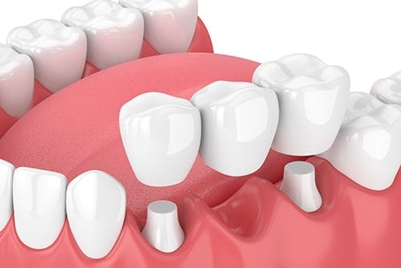Once your crown or bridge is fitted, it’s important to maintain a regular and effective routine of oral hygiene. Brush and floss two to three times a day, taking extra care to floss around your crown. This will help avoid decay where the crown and the tooth join. Avoid sticky foods such as toffee and lollies, and do not use your teeth inappropriately – chewing pens, crunching ice, gnawing fingernails, etc.
A dental floss threader, which looks like a small bendy brush, can be used to clean under your bridge. There are also water jets on the market that will help keep your bridge clean.
Whether you have a crown or a bridge, the most important thing is to regularly visit your dentist for a checkup and clean. This way problems can be detected early, allowing them to be corrected before they become painful and expensive.
In ultrasonic scaling, only the tip of the tool touches the tooth surface, and only for a short time. It's also possible to remove deposits of plaque and tartar from under the gum line by using an extremely small tip on an ultrasonic unit, which can cause less discomfort and result in a deeper and better cleaning.
After a thorough, professional tooth cleaning, you know that your teeth look brighter and feel fresher. But tooth cleaning isn't just about appearances. It's the primary means of preventing and treating periodontal (gum) disease. Many studies have demonstrated a possible link between periodontal health and overall (systemic) health — which means regular tooth cleaning may benefit not just your mouth, but your whole body.
Why do teeth need special cleaning?
Over time, dental plaque (a naturally occurring bacterial biofilm) and stains build up on tooth surfaces. Dental calculus (also called tartar), a harder deposit, can then form both above and below the gum line. A thorough dental cleaning removes these substances from the teeth, and helps keep disease-causing bacteria from proliferating.
Tooth cleaning is usually accomplished by the non-surgical technique of scaling, sometimes called “root debridement.” It's typically a relatively painless procedure in which small dental instruments are used to physically remove deposits from the surfaces of teeth. At one time, scaling was performed entirely with manual tools. But in the last several decades, the ultrasonic scaler has changed all that.
What Is an Ultrasonic Scaler?
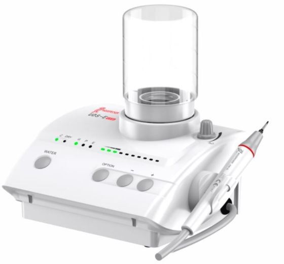
Ultrasonic Scaler.There are different types of ultrasonic scalers, but all of them work in a similar fashion: electromagnetic forces in the unit's hand-held “wand” cause its tiny tip to vibrate rapidly. These vibrations, which occur at a rate faster than the speed of sound, effectively blast away plaque, calculus and stains from the tooth surfaces.
A small stream of water and/or antibacterial mouthwash, which emerges near the tip of the scaler, is called lavage. Lavage is used to cool the ultrasonic scaler's tip and flush away debris from the area being treated. The vibrating tip causes some of the water to break into millions of tiny bubbles, an effect called cavitation. This ruptures the walls of bacterial cells and helps create an environment that's less hospitable to harmful bacteria.
Is It Better?
Studies show that a thorough ultrasonic cleaning takes about one-third less time as compared to hand scaling — which means you need less time in the chair. Many patients prefer ultrasonics to other types of scaling, possibly because it requires the clinician to use less force than a hand scaler to get the same effect. In ultrasonic scaling, only the tip of the tool touches the tooth surface, and only for a short time.
It's also possible to remove deposits of plaque and tartar from under the gum line by using an extremely small tip on an ultrasonic unit, which can cause less discomfort and result in a deeper and better cleaning. Sometimes an ultrasonic scaler is used first, and then any stubborn areas are scaled by hand.
What to Expect
Anyone who has a substantial buildup of tartar or is prone to gum disease can benefit from ultrasonic scaling. It can also help to remove stains from coffee and cigarettes, for example. Yet, for all its power, most people experience little or no discomfort during the procedure.
If you have very sensitive teeth, it may be possible to alleviate some discomfort by using slimmer tips on the scaler. Alternatively, a topical anesthetic may be applied, or conscious sedation can be administered. The power range, the flow of lavage water and the frequency of tip vibration may also be adjusted for increased comfort.
Special tips are also available to clean composite or porcelain tooth restorations, titanium implants, or areas of demineralization (enamel loss) on your teeth. If you have a cardiac pacemaker, be sure to alert all dental professionals/personnel before ultrasonic scaling treatment, so precautions can be taken.
Smile Design Treatment is a cosmetic treatment that focuses on improving the appearance of your smile through certain procedures such as dental veneers, composite bonding, teeth whitening and tooth implant.
How is the treatment done?
Smile Design Treatment is a cosmetic treatment that focuses on improving the appearance of your smile through certain procedures such as dental veneers, composite bonding, teeth whitening and tooth implant. People suffering from dental problems like tooth decaying, tooth loosening, stains, and bacterial plaque usually opt for this makeover treatment. Some factors taken into consideration for this treatment include: facial appearance and skin tone, gum tissues and lips.
Some aspects that the smile design treatment encounters are: Tooth color- discolored or stained tooth may make you look aged and dull, while a well-shaped bright set of teeth leaves you with a perfect smile; Alignment and spacing- uneven broken, overlapping teeth or teeth which have gaps in between can be evenly aligned and straightened with the help of improved veneers; Missing tooth- in case of a missing or cracked tooth, the treatment provides tooth implantation which leaves you with a confident smile; Fuller lips, smile and cheeks- the treatment not only focuses on your teeth, but also makes your lips and cheek look good so that you get a perfect makeover look; Tooth proportion and smile line- in order to make your smile look flawless, the orthodontist or cosmetic surgeon would examine if your teeth are in correct proportion, or the imaginary smile line following the edges of your upper lips is in proportion with the curve of your lower lips.
Who is eligible for the treatment? (When is the treatment done?)
Smile design treatment is specially recommended for those who suffer from various oral problems like tooth decaying, tooth loosening, bacterial plaque, weak gums etc. People often lose confidence and peace of mind because of these sufferings. The treatment procedure involves the following steps: Tooth whitening and porcelain veneers- with the help and application of certain tools, the cosmetic surgeon whitens your tooth, covers the gap between your teeth, restores broken or discolored tooth; Dental bonding- this refers to the application of high grade composite materials at the front of your teeth, and is an affordable alternative to porcelain veneers; Root canal treatment- this technique is used to clean the infection right from the root of your teeth, and is filled with sealing material; Dental bridge- this refers to the method of bridging the gaps in between your teeth where they have either been removed or have fallen.
The technologies used in the treatment are: Intentional root canal treatment- used to repair a badly decayed or infected tooth wherein the nerve and the pulp are removed in order to clean and seal the inside of the tooth; Laser gingivectomy- laser wavelengths are used to carefully cut gingiva for cosmetic periodontal indications; Laser gum depigmentation- people often encounter gum bleeding or dark patches on the gum caused by melanin. This technology removes or lightens the dark patches and leaves you with healthy, pink gums; 3M essential crowns- this all-ceramic metal free Zirconia crowns and bridges is strongly recommended by doctors because it not only helps in high quality restoration but also strengthens your teeth.
Who is not eligible for the treatment?
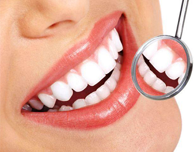People who suffer from different oral problems such as crooked or protruded teeth, broken or chipped tooth, gum bleeding, dark patches on the gum, stained or discolored teeth etc, usually undergo a smile design treatment. Those who want to enhance their smile may also opt for fuller and thicker lips treatment. Smile designing not only helps in high quality restoration but also gives your lips a fuller and thicker look.
Are there any side effects?
There are no specific restrictions to Smile Design treatment.
What are the post-treatment guidelines?
There are no serious side effects of Smile design treatment. However, some people often show minor or temporary sensitivity problems during or after the gum bleaching procedure.
How long does it take to recover?
The post treatment guidelines suggest brushing your teeth at least 2-3 times a day with a non-abrasive fluoride toothpaste, use of alcohol-free mouthwash, and regular flossing. One must avoid intake of high-sugar food in order to prevent cavities, limited consumption of coffee and soda in order to avoid stains and spots on your teeth.
What is the price of the treatment in India?
The estimated time to recover after a smile design treatment usually accounts to 2-4 weeks. However, the post treatment guidelines are to be kept in minds.
Are the results of the treatment permanent?
The estimated cost of undergoing smile design treatment usually varies between Rs.50,000- Rs. 70,000 depending on the features you want to work on.
What are the alternatives to the treatment?
The different technological procedures used in the treatment improve your oral and dental conditions by methods of teeth whitening, dentures, tooth implants, gum bleaching etc. The final results of the treatment are permanent that leave you with a perfect smile.
There are two main types of material used to fabricate a veneer:
composite and dental porcelain. A composite veneer may be directly placed (built-up in the mouth), or indirectly fabricated by a dental technician in a dental lab, and later bonded to the tooth, typically using a resin cement. Usually used for treatment of adolescent patients who will require a more permanent design once they are fully grown. The lifespan of a composite veneer is approximately 4 years. In contrast, a porcelain veneer may only be indirectly fabricated. A full veneer crown is described as "a restoration that covers all the coronal tooth surfaces (Mesial, Distal, Facial, Lingual and Occlusal)"[citation needed]. Laminate veneer, on the other hand, is a thin layer that covers only the surface of the tooth and generally used for aesthetic purposes. These typically have better performance and aesthetics and are less plaque retentive
Medical uses
Veneers are a prosthetic device, by prescription only, used by the cosmetic dentist. A dentist may use one veneer to restore a single tooth or veneer with high quality that may have been fractured or discolored, or in most cases multiple teeth on the upper arch to create a big bright "Hollywood" type of smile makeover. Many people have small teeth resulting in spaces that may not be easily closed by orthodontics. Some people have worn away the edges of their teeth resulting in a prematurely aged appearance, while others may have malpositioned tooth/teeth that appear crooked. Multiple veneers can close these spaces, lengthen teeth that have been shortened by wear, fill the black triangles between teeth caused by gum recession, provide a uniform color, shape, and symmetry, and make the teeth appear straight. Dentists also recommend using thin porcelain veneers to strengthen worn teeth.[citation needed] It is also applied to yellow teeth that won't whiten. Thin veneers are an effective option for aging patients with worn dentition. In many cases, minimal to no tooth preparation is needed when using porcelain veneers.
When preparing, in between prep and fit appointments of the veneer, you can make temporaries, usually out of composite. These are not normally indicated but can be used if the patient is complaining of sensitivity or aesthetics. According to a leading Beverly Hills Cosmetic Dentist, temporaries are really important to design and finalize the aesthetics of the final veneers. Temporaries help patients and the dentist decide on the right color, length and shape of the veneers.
Indications
Discoloured teeth, malformed teeth, enamel hypoplasia (not enough enamel), enamel hypocalcification (enamel not fully mineralised), fluorosis, tetracycline staining, non-vital tooth discolouration, malposition, enamel fractures, enamel loss by erosion, modify shape of tooth.
Contraindications
In a controversial opinion, Dr. Michael Zuk, a Canadian DDS, profiles in his opinion and problems of overuse of porcelain veneers by certain cosmetic dentists in 'Confessions of a Former Cosmetic Dentist'. He suggests that the use of veneers for 'instant orthodontics' or simulated straightening of the teeth can be harmful, especially for younger people with healthy teeth. Leading dentists caution that minor superficial damage or normal wear to the teeth is not justification for porcelain or ceramic veneers. This is because the preparation needed to apply a veneer may in some cases destroy 3–30% of the tooth's surface if performed by an inexperienced dentist. It has been found that after 10 years, 50% of veneers are either displaced, need re-treatment, or are no longer in satisfactory condition.
Some cosmetic dentists may push unnecessarily for prosthodontic treatment in adolescents or young to middle-aged adults who have otherwise healthy teeth that only necessitate whitening or more routine cleaning. As preparation for veneers requires shaving down the tooth in some cases, sensitivity and decay may become a problem if this procedure is not properly performed. In addition, a veneer's maintenance cost can also be prohibitive for many individuals. Veneer placement should be limited to individuals with significant aesthetic problems, such as badly cracked or broken teeth, that do not meet the requirements for a crown or full replacement.
Also, poor oral hygiene, uncontrolled gingival disease, high caries rate, parafunction, no enamel, unreasonable patient expectations, large existing restorations.
ADDRESS : 117/Q/458-B, Sharda Nagar, Kanpur (Near Omkareshwar Party Lawn)
Phone : +91-8604437743, +91-8299060827
E- mail :
copyright © 2019 32 Pearls Dental Clinic & Implant center | ALL RIGHT RESERVED
DESIGNED & DEVELOPED BY :Himanshu Mishra